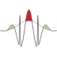

QUDYMA | Software
QUDYMA | Software
Understanding quantum dynamics far from equilibrium is a daunting task in all but the simplest model systems. At QUDYMA we aim to understand real materials and devices that our experimental colleagues also study in the lab. This requires powerful numerical techniques that can deal with the complexity of the quantum world under arbitrary perturbations. We combine established ab-initio codes with our own simulation libraries, developed in-house. This becomes a necessity when exploring the frontier of quantum many-body dynamics in novel materials, as the numerical cost of the simulations is often enormous, so incorporating new state-of-the-art algorithms and approaches is a must. Developing and maintaining these state-of-the-art tools using modern High-Performance Computing (HPC) approaches is a huge research project in its own right. We have currently three main packages under active development: ATATA, EDUS and Quantica.jl, and some older ones in maintenance mode (MathQ, IWERIA, TimeProp).
Quantica.jl
Main Developer: Pablo San-Jose
An open-source domain-specific language (DSL) written in Julia. It allows to define arbitrary tight-binding models, and to compute and visualise general electronic structure and transport properties for them. Its guiding design principles are performance, extensibility and composability. It is a registered Julia package (also available directly from Github). It has complete documentation and also a recorded demo in Youtube.

ATATA
Main Developer: Rui Silva
Contributors: Eduardo B. Molinero, Pablo SanJose, Álvaro Jiménez-Galán
We develop the semiconductor Wannier equations (SWEs), a real-time, real-space formulation of ultrafast light-matter dynamics in crystals, by deriving the equations of motion for the electronic reduced density matrix in a localized Wannier basis. Working in real space removes the structure-gauge ambiguities that hinder reciprocal-space semiconductor Bloch equations. Electron-electron interactions are included at the time-dependent Hartree plus static screened-exchange (TD-HSEX) level. Decoherence is modeled with three complementary channels: pure dephasing, population relaxation, and distance-dependent real-space dephasing; providing physically grounded damping for strong-field phenomena such as high-harmonic generation. Conceptually, the SWEs bridge real-space semiclassical intuition with many-body solid-state optics, offering a numerically robust and gauge-clean alternative to reciprocal-space approaches for nonlinear optical response and attosecond spectroscopy in solids.
EDUS
Main Developer: Antonio Picón
A code to simulate the electron dynamics of a material induced by a laser pulse. The code is designed to model state-of-the-art ultrafast experiments, and is particularly efficient for simulating X-ray spectroscopy.